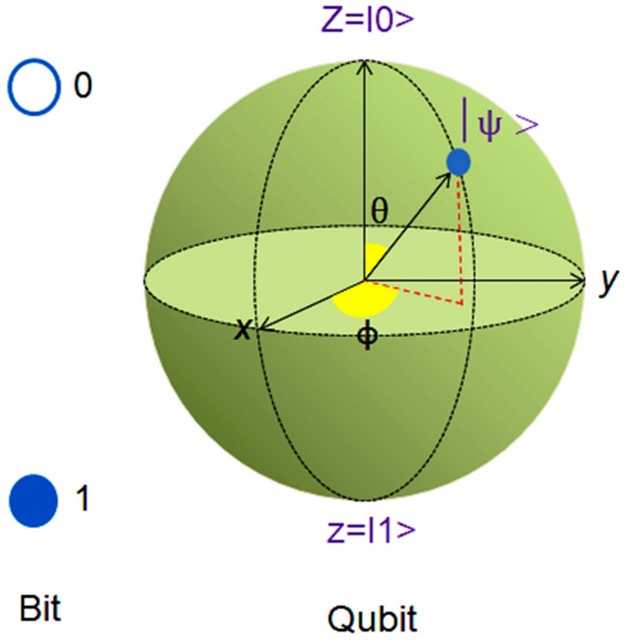
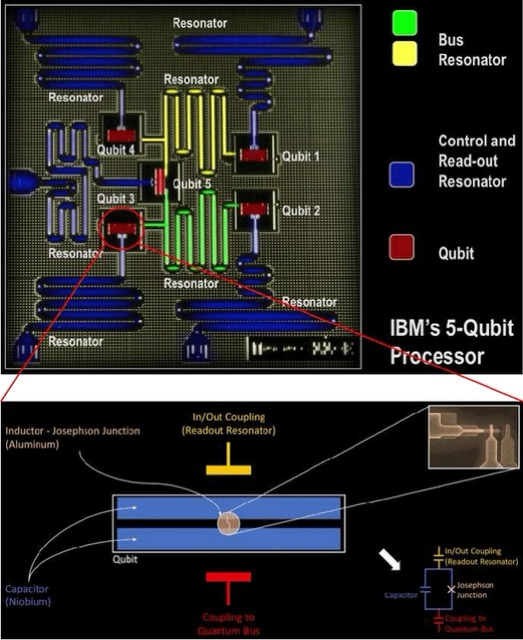
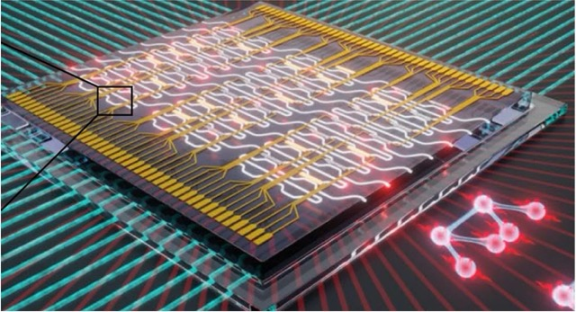
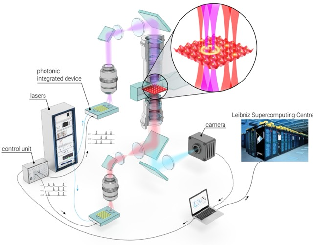
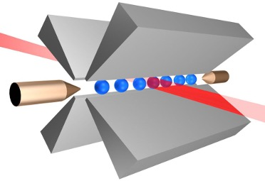
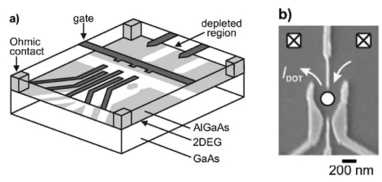
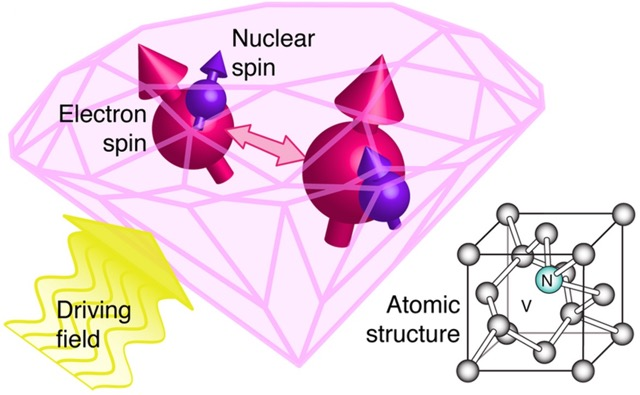
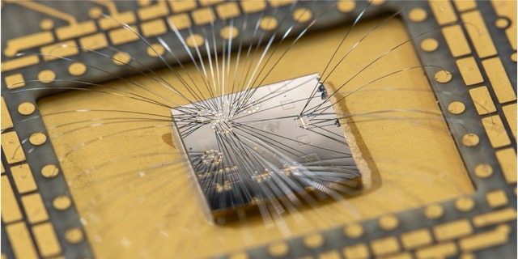

Featured Bolgs
Interesting blogs on quantum technologies
Article: Abdul Fatah Jamro
Practical Realization of Qubit
Quantum bit or Qubit is the basic unit of quantum information. Qubits, the essential building blocks of quantum information, appear in several forms across existing quantum computing technologies. As of 2024, the field lacks a standardized method for constructing quantum computers, leading to a range of experimental approaches to developing qubit as a unit of quantum information.
Each technology is better in their own right, each has strengths and weaknesses. The most common types of qubits are mentioned here:
1. Superconducting Qubit
Superconducting qubit is a key player in solid-state quantum computing, it harnesses superconducting electronic circuits. These circuits enable quantum computing by exploiting the unique properties of superconductors to process quantum information efficiently under very low temperature (~4 milli kelvin).
2. Photonic Qubit
Photonic Quantum Computing (PQC) employs individual photons, or particles of light, as qubits to manipulate and process quantum information. This approach leverages the intrinsic properties of light to perform quantum computations. photonic quantum computing can be performed at room temperature. This is one of the significant advantages of using photons as qubits, as they do not require the extreme cooling that other types of quantum systems, like superconducting qubits, typically need
3. Neutral-Atom Qubit
Neutral-atom quantum computing utilizes Rydberg atoms—highly excited neutral atoms with exaggerated atomic properties. These atoms serve as qubits. This method leverages the strong interactions between Rydberg atoms to perform quantum operations, making it a promising approach for scalable quantum computing. Compared to superconducting qubits, neutral-atom systems potentially offer longer coherence times and lower error rates. Unlike photonic qubits, which operate effectively at room temperature and are ideal for quantum communication, neutral-atom qubits excel in quantum simulation and computation through their robust interaction capabilities.
4. Trapped Ion Qubit
Trapped ion quantum computing utilizes ions—atoms with an electrical charge—confined in electromagnetic fields. These charged atoms are used as qubits and manipulated with lasers to perform quantum operations. The precision of laser interactions allows for high-fidelity quantum gates, which are crucial for reducing computational errors. Trapped ion systems are known for their long coherence times, enabling sustained quantum information processing. Compared to superconducting and photonic qubits, trapped ions provide extremely stable qubits with the ability to interact at long distances, making them highly suitable for scalable quantum computing and precise quantum simulations
5. Quantum dot Qubit
Quantum dot quantum computing uses tiny semiconductor nanoparticles, known as quantum dots, to confine electrons or holes in three-dimensional space, functioning as qubits. By manipulating the quantum state of these confined charges through external electric or magnetic fields, quantum dots facilitate quantum operations. This approach benefits from the well-established semiconductor manufacturing techniques, allowing easier integration with existing technology. Compared to other quantum systems like trapped ions and superconducting qubits, quantum dot qubits potentially offer scalable solutions with the promise of operating at higher temperatures, thus reducing the need for extreme cooling infrastructure.
6. NV diamond Qubit
NV diamond quantum computing utilizes nitrogen-vacancy (NV) centers in diamond, where a nitrogen atom replaces a carbon atom adjacent to a vacancy in the diamond lattice. These defects act as stable qubits that can be controlled and read out using optical and microwave techniques. The robustness of diamonds provides exceptional protection against environmental noise, allowing for long coherence times. Compared to other quantum systems, NV diamond qubits excel in operating at room temperature and maintaining high fidelity over extended periods, making them particularly useful for quantum sensing and quantum information processing applications that require stability and precision.
7. Topological Qubit
The qubit is composed of a group of anyons, which do not appear in 3D systems. It employs quasiparticles in two-dimensional systems, called anyons, whose world pass around one another to form braids in a three-dimensional spacetime. These anyons are not defined by individual properties but by their spatial relationships, forming topological qubits. The global nature of their quantum information storage makes them inherently resistant to local disturbances, dramatically reducing error correction needs. This robust error resistance offers significant advantages in building stable, practical quantum computers.
7. summary
The diversity of qubit models in quantum computing stems from the varying strengths and challenges each type presents. Different models, like superconducting qubits, photonic qubits, and topological qubits, leverage distinct physical phenomena to process quantum information, offering unique advantages in coherence times, error rates, and operating conditions. This variety allows researchers to explore multiple pathways for overcoming the technological hurdles of quantum computing, such as error correction and scalability. Ultimately, the choice of qubit model depends on the specific requirements and goals of the quantum system being developed, pushing the boundaries of innovation in multiple directions simultaneously.
Article: Abdul Fatah Jamro